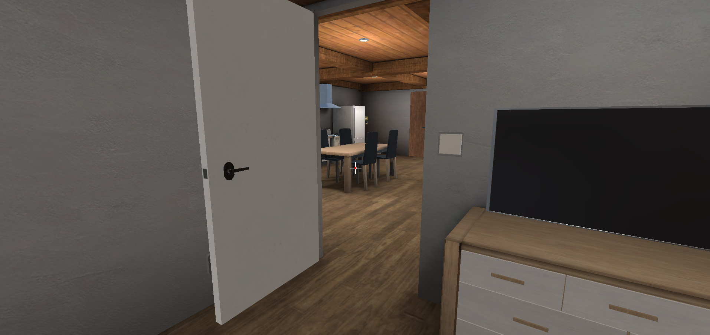
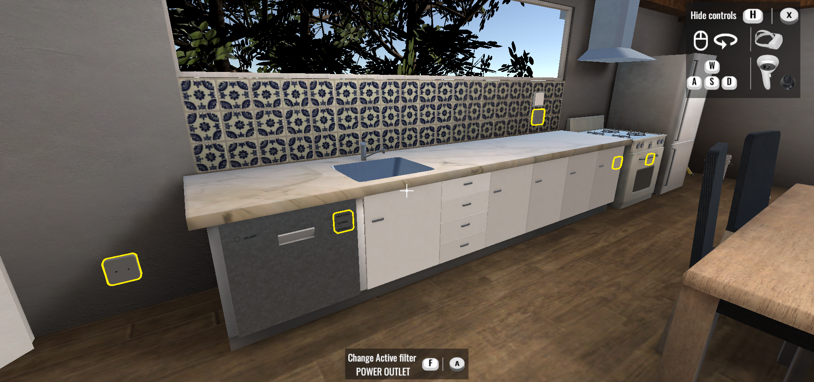

Das Projekt im Modul Mensch-Computer-Interaktion dieses Semester ist eine Wohnungsbesichtigungs Applikation. Diese wurde
mit Hilfe einer Virutal Reality Brille (Oculus Quest 2 ) realisiert und trägt den Namen "VR - Here". Ziel war es mit dem ersten
Prototyp anhand Nutzertests die Schwächen und Fehler hervorzuheben und diese in der nächsten Interation zu verbessern um den Nutzern
ein besseres Erlebnis zu bieten.
Der erste Prototyp und der Nutzertest

Bei dem ersten Prototyp war die Anwendung teilweise schwer verständlich und kompliziert für unsere Nutzer. Die Nutzertest
bestanden daraus verschiedene Objekte (Steckdosen, Lichtschalter, Gasanschlüsse und LAN-Anschlüsse) zu finden und aufzuzählen.
Es fiel auf, dass die Nutzer Probleme hatten alle vorgegebenen Objekte zu finden innerhalb einer Minute. Die Probleme des ersten Prototypen
wurden festgehalten und es wurde geplant wie sie in der nächsten Iteration des Projektes verbessert werden können.
Der verbesserte Prototyp

In der zweiten Iteration des Projektes wurde die geplanten Verbesserungen umgesetzt. Es wurde ein Filter eingebaut, der
die wichtigen Objekte in der Wohnung, mit Hilfe eines gelben Rahmens hervorhebt. Die UI wurde mit der Anzeige des aktiven
Filters sowie einer optionalen Hilfestellung, die sich mit einem Tastendruck anzeigen lässt, erweitert.